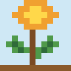
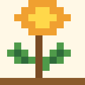

สวนพฤกษศาสตร์ไทย
สวนพฤกษศาสตร์ไทยขมิ้นชัน



- ชื่อไทย
- ขมิ้นชัน
- ชื่อวิทยาศาสตร์
- Curcuma longa
- วงศ์พืช
- Zingiberaceae
- ประเภทพืช
- พืชสมุนไพร
ลักษณะทั่วไป
พืชล้มลุกที่มีเหง้าอยู่ใต้ดิน ปลูกกันมากในเขตร้อนชื้น
ลักษณะทางพฤกษศาสตร์
ใบขนาดใหญ่รูปใบหอกออกจากเหง้า ดอกเป็นช่อกลางลำต้น เหง้าเมื่อผ่าจะมีเนื้อสีส้มอมเหลือง
ถิ่นกำเนิดและการกระจายพันธุ์
มีถิ่นกำเนิดในเอเชียใต้ และปลูกทั่วเอเชียตะวันออกเฉียงใต้
สภาพแวดล้อมที่เหมาะสม
ชอบดินร่วนซุย ระบายน้ำดี และมีความชื้นพอเหมาะ
วิธีปลูกและดูแล
ปลูกด้วยชิ้นเหง้าในช่วงต้นฤดูฝน และเก็บเกี่ยวเมื่อใบเริ่มเหลืองแห้ง
ส่วนที่นำมาใช้ประโยชน์
เหง้า
การนำไปใช้
ใช้เป็นเครื่องเทศในเครื่องแกง โดยเฉพาะอาหารภาคใต้ และใช้ย้อมผ้าให้ได้สีเหลือง
สรรพคุณหรือประโยชน์
อยู่ในตำรายาแผนโบราณของไทย ส่วนประโยชน์ทางการแพทย์ของสารสำคัญยังอยู่ระหว่างการศึกษา
ข้อควรระวัง
การกินในปริมาณอาหารทั่วไปโดยมากไม่มีปัญหา แต่ผลิตภัณฑ์เสริมอาหารเข้มข้นอาจมีปฏิกิริยากับยาบางชนิด เช่น ยาต้านการแข็งตัวของเลือด ควรปรึกษาแพทย์หรือเภสัชกร
เกร็ดความรู้
ขมิ้นชันอยู่ในวงศ์ขิงเช่นเดียวกับขิง ข่า และกระชาย
แหล่งอ้างอิง
ข้อมูลในหน้านี้เรียบเรียงเพื่อการเรียนรู้และยังไม่ได้ตรวจสอบทีละรายการกับเอกสารต้นฉบับ โปรดตรวจสอบเพิ่มเติมจาก Plants of the World Online และ สวนพฤกษศาสตร์สมเด็จพระนางเจ้าสิริกิติ์ ก่อนนำไปอ้างอิงในรายงาน